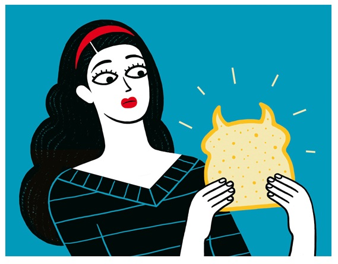

Luci Gutiérrez |
Luci Gutiérrez (Barcelona, 1977) es una ilustradora freelance que se ha hecho un hueco en algunas de las publicaciones periódicas más importantes del mundo como son The New York Times, The Washington Post, Wall Street Jounal, o The New Yorker. Sus ilustraciones destacan por la simpleza, y una clara capacidad de utilizar únicamente los elementos estrictamente necesarios para contar lo que quiere contar, y del uso de colores saturados. Estos encargos para medios y revistas los ha ido compaginando con una de sus mayores pasiones: reflejar el mundo que le rodea a través de sus ilustraciones. La propia Luci ha confirmado en entrevistas que se considera una "voyeur" de la vida, ya que se lo pasa muy bien observando a la gente y dibujando algunas de las personas y situaciones que le llaman la atención. Le gusta sentarse en alguna terraza con el cuaderno en la mano y realizar bocetos a modo de diario, laboratorio y álbum de fotos. Este amor por el detalle, podemos apreciarlo claramente en sus libros English is not Easy o Manual de autodefensa en los cuales Luci se ríe de situaciones que fácilmente nos encontramos en el día a día a través de sus viñetas. |